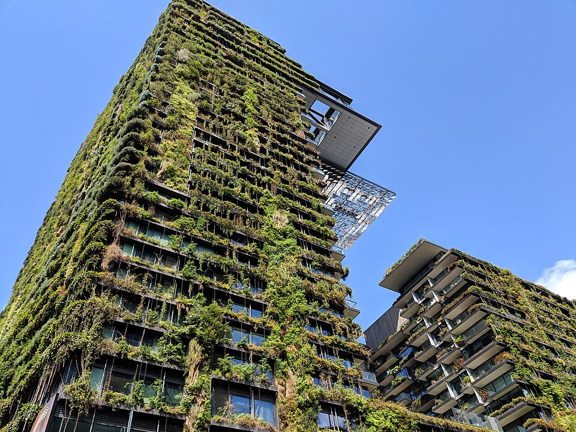
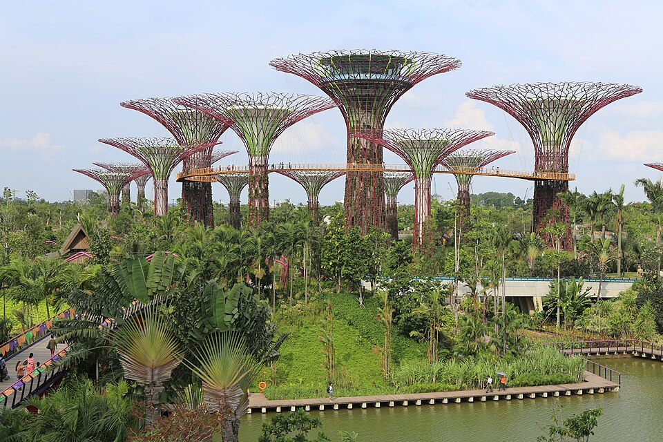

La cité
Les Tours-Forêts - Les Arbres-Soleil
Les Tours-Forêts
Chaque immeuble est couvert de plantes. Elles nettoient l'air, gardent les logements frais l'été et accueillent les oiseaux.

Les Arbres-Soleil
Au centre de la ville, de grands arbres en métal récoltent la lumière du soleil et l'eau de pluie. Le soir, les habitants s'y retrouvent.
